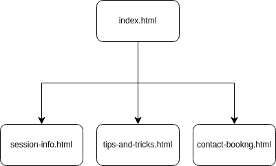
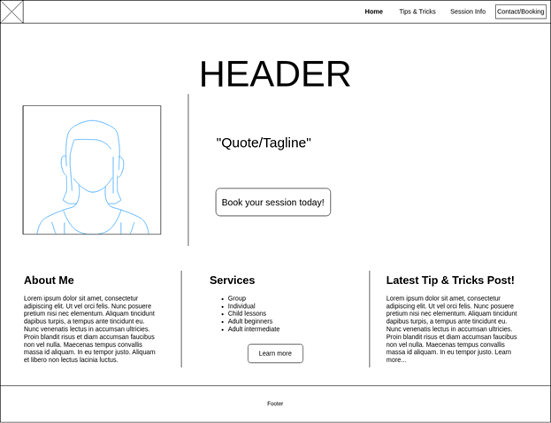

I plan to design and develop a website for a roller‑skating instructor who loves teaching people of all ages and skill levels. The site will function as her business platform for promoting and booking group and individual lesson sessions. It will also include a dedicated area where she can share educational content about her passion for roller skating, giving beginners a place to read tips, learn techniques, and build confidence online.
The intended audience of the website would be skaters who are interested in learning and improving their skills. This includes people who are completely new to roller skating as well as those who already skate and want to build more confidence or learn new techniques. The site is also geared toward visitors who may be interested in booking hands on lessons with an instructor.
Key features include an instructor availability table, a dedicated skating tips page to host blog style posts, and a contact section with a form for booking or inquiries.

The website will follow a simple and intuitive structure. The homepage includes a navigation bar that links to the three additional pages, allowing users to move through the site easily. In addition to the main navigation, the homepage also features contextual buttons and “learn more” links within content sections. These elements naturally guide users to the relevant pages based on what they’re already reading or interested in, creating a smooth and logical browsing experience.

The homepage is designed to highlight the instructor and establish her credibility from the very first glance. The layout focuses on showcasing her business, her experience, and her recent posts in a clean and modern structure. The wireframe intentionally keeps the design simple and organized, allowing the fun, personality, and whimsy of the final site to be added later during the visual design phase. This approach ensures that the homepage communicates professionalism and trust while still leaving room for creative styling in the final build.
I expect to rely heavily on the W3Schools HTML and CSS tutorials throughout the development of my final project. In particular, I will use the CSS Forms tutorial to help me build the booking fields on the Contact/Booking page. I also plan to reference the CSS Margins and CSS Padding tutorials to correctly space and structure my content so it matches the layout shown in my wireframe. Additionally, I anticipate using the CSS Flexbox or Grid tutorials to recreate the multi‑column sections and overall page layout in a clean, responsive way.
Go to top